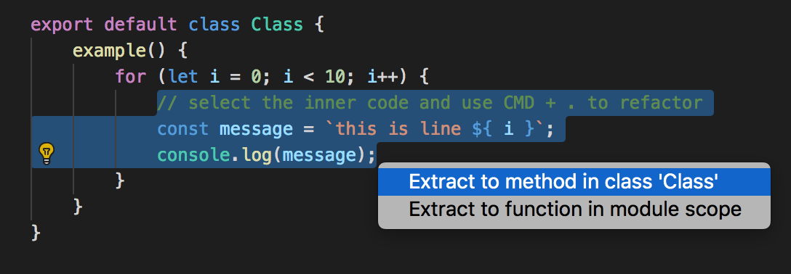
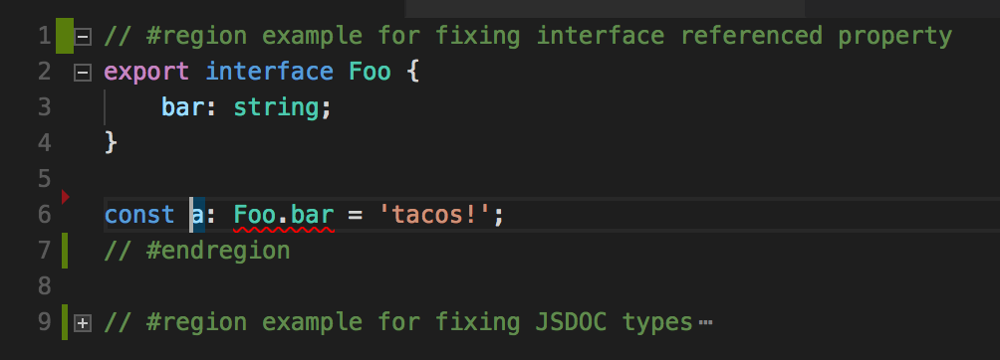

What's new in TypeScript?
TypeScript 2.5, 2.6, and 2.7
Hello!
Paul Shannon

- Sr Engineer @ SitePen
- Co-maintainer of Intern
- SitePen Podcast
- Phoenix TypeScript
- devpaul
- @developerPaul
So what's been going on?
TypeScript is maturing as a language.
Focus has largely been on improved tooling and IDE integration
Language Services
(Improved IDE integration)
Extract Function and Extract Method
Automatic imports from @types
tsserver will automatically search and try to import from @types
Quick Fixes
- correct references to types of properties
- fix JSDoc types to TS types
- Apply all quick fixes in a file
Outlining with // #region comments
Compiler Features
JSDoc casting and asserting of types
The compiler is now aware of inline JSDoc comments used to cast types in JavsScript files
The compiler will validate JSDoc types against usage.
Stricter function types
tsc --strictFunctionTypes(functional type assignment is checked contravariantly)
Localization for error messages
tsc --locale ja... and more!
- Suppress errors using // @ts-ignore
- Support for JSX fragment
- Speed improvements to --watch
- Strict property initialization checks in classes
Deprecations
- Write only references are now considered unused under --noUnusedLocals and --noUnusedParameters
- In ambient contexts expressions are now disallowed in default exports
- Uninhabitable type intersections are simplified to "
never"
Language Features
Optional catch binding
function supportsLowSampleRate() {
try {
const context = new AudioContext();
context.createBuffer(2, 9000, 1);
return true;
}
catch {
return false;
}
}
Properties named with const-declared symbols
const specialAction = Symbol();
const specialValue = Symbol();
const obj = {
[specialAction]() {},
[specialValue]: string = 'value'
}
Numeric Separators
const cost = 1_000_000;
const hex = 0xDE_AD_BE_EF;
const small = 0.000_000_1;
Improved Typing
Definite assignment assertions
class {
data!: string
setData(data: string) {
this.data = data;
}
}
Improved type inference for object literals
const obj = test ? { text: "hello" } : {};
const s = obj.text; // string | undefined
Inferred type guards
interface A {
x: number;
}
interface B {
y: string;
}
let q: A | B = ...;
if ('x' in q) {
// q: A
} else {
// q: B
}
TypeScript Releases
- 2.5 - August 2017
- 2.6 - October 2017
- 2.7 - January 2018